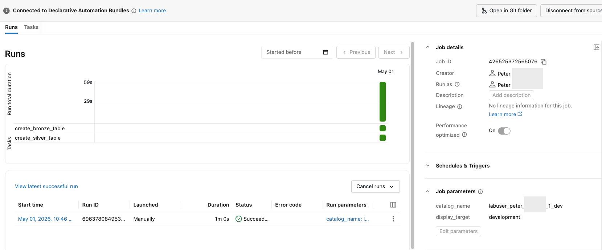

Section 5 · Implementing CI-CD · Quelle: Kurs 8, Modul 01
Sobald ein Job, eine Pipeline oder ein Notebook in Databricks über die Oberfläche entwickelt und getestet wurde, stellt sich die Frage, wie diese Ressourcen zuverlässig und wiederholbar in andere Umgebungen – etwa eine Test- oder Produktionsumgebung – gebracht werden können. Manuelles Nachbauen per Klick ist fehleranfällig und lässt sich nicht versionieren. Genau hier setzen Declarative Automation Bundles an, die in der Databricks-Dokumentation und in älteren Kursmaterialien häufig noch unter ihrem ursprünglichen Namen Databricks Asset Bundles (DABs) zu finden sind – beide Begriffe bezeichnen dasselbe Konzept. Ein Bundle beschreibt Jobs, Pipelines und weitere Ressourcen als Code (YAML) und macht Databricks-Projekte damit zu klassischen Software-Projekten, die sich versionieren, überprüfen (Code-Review) und automatisiert deployen lassen – die Grundlage für CI/CD in der Data-Engineering-Welt.
Jedes Bundle benötigt genau eine Konfigurationsdatei mit dem festen Namen databricks.yml im Wurzelverzeichnis des Projekts. Diese Datei muss mindestens die oberste Zuordnung bundle mit einem Namen enthalten. Für ein neues, noch leeres Bundle sieht die Grundstruktur so aus:
bundle: # Required
name: demo01_bundle # Required
resources:
jobs:
# <-- hier werden Job- und Pipeline-Definitionen ergänzt
targets:
development:
# The default target uses 'mode: development' to create a development copy.
mode: development
default: true
workspace:
root_path: /Workspace/Users/${workspace.current_user.userName}/.bundle/${bundle.name}/${bundle.target}
Die drei zentralen Top-Level-Zuordnungen sind:
bundle – der programmatische (logische) Name des Bundles. Er taucht später im Workspace-Pfad wieder auf, unter dem alle deployten Dateien liegen.resources – die eigentlichen Databricks-Objekte, die das Bundle verwaltet: Jobs, Lakeflow-Declarative-Pipelines, Modelle usw.targets – eine oder mehrere Zielumgebungen, in denen das Bundle deployt werden kann. Jedes Target ist eine eigenständige Kombination aus Workspace-Einstellungen, Ressourcen-Overrides und (optional) einem Deployment-Modus.Der mode: development-Modus in einem Target sorgt dafür, dass alle nicht als Datei/Notebook deployten Ressourcen automatisch mit dem Präfix [dev <benutzername>] versehen und mit einem dev-Tag markiert werden – so lassen sich Entwicklungs-Deployments in der Oberfläche sofort von produktiven Ressourcen unterscheiden. Nur ein Target darf default: true gesetzt haben; das verhindert, dass ein CLI-Aufruf ohne explizites Ziel versehentlich in der Produktion landet.
Ein gängiger Startpunkt in der Praxis: Man baut den Job zunächst gewohnt über die Oberfläche (Jobs & Pipelines), testet ihn, und lässt sich anschließend die YAML-Definition automatisch generieren. Über das Kontextmenü eines Jobs (die drei Punkte neben „Run now“) steht die Funktion View as code zur Verfügung, die die Job-Konfiguration wahlweise als YAML, Python (SDK oder Bundle-Format) oder JSON ausgibt. Die YAML-Variante lässt sich direkt in die resources-Zuordnung von databricks.yml einfügen. Nach dem Einfügen sind meist noch zwei Anpassungen nötig: Notebook-Pfade auf relative Pfade mit Dateiendung (z. B. ./src/create_bronze_table.ipynb) umstellen und dem Job-Schlüssel (dem Bezeichner unter jobs:) einen sprechenden, stabilen Namen geben. So sieht die fertige Konfiguration für einen einfachen zweistufigen Job aus einem der Kursbeispiele aus:
resources:
jobs:
demo1_simple_dab_labuser15933383_1784705641:
name: demo1_simple_dab_labuser15933383_1784705641
tasks:
- task_key: create_bronze_table
notebook_task:
notebook_path: ./src/create_bronze_table.ipynb
source: WORKSPACE
- task_key: create_silver_table
depends_on:
- task_key: create_bronze_table
notebook_task:
notebook_path: ./src/create_silver_table.ipynb
source: WORKSPACE
queue:
enabled: true
parameters:
- name: display_target
default: development_updating_the_value_test
- name: catalog_name
default: labuser15933383_1784705641_1_dev
Die beiden Notebook-Tasks bauen aufeinander auf (depends_on) und erhalten über parameters zur Laufzeit den Zielkatalog sowie einen Anzeigetext mit – klassische Job-Parameter, wie sie auch außerhalb von Bundles verwendet werden. Die zugehörigen Notebooks lesen diese Werte über dbutils.widgets.get(...) aus, zum Beispiel im Bronze-Layer-Notebook:
# Databricks notebook source
my_catalog = dbutils.widgets.get('catalog_name')
target = dbutils.widgets.get('display_target')
set_default_catalog = spark.sql(f'USE CATALOG {my_catalog}')
# COMMAND ----------
spark.sql(f'''
CREATE OR REPLACE TABLE {my_catalog}.default.health_bronze_demo_01 AS
SELECT *, _metadata.file_name as file_name, current_timestamp() as load_date
FROM read_files('/Volumes/{my_catalog}/default/health/', format => 'csv', header => true)
''')

Nachdem die CLI installiert und authentifiziert ist (Workspace-URL und Zugangsdaten, z. B. per PAT oder OAuth), wird jedes Bundle-Kommando aus dem Verzeichnis heraus ausgeführt, in dem die databricks.yml liegt – die CLI nutzt diese Datei automatisch für Authentifizierungsdetails wie Host und Profil. Der typische Lebenszyklus eines Bundles besteht aus vier Schritten:
# Version der installierten Databricks CLI prüfen databricks -v # Die databricks.yml auf syntaktische und semantische Korrektheit pruefen databricks bundle validate # Bundle in die Zielumgebung "development" deployen databricks bundle deploy -t development # Den in der YAML definierten Job ausfuehren (Job-Schluessel aus "resources.jobs") databricks bundle run -t development demo01_simple_dab # Alle zuvor deployten Ressourcen dieses Bundles endgueltig loeschen databricks bundle destroy --auto-approve
| Befehl | Zweck |
|---|---|
databricks bundle validate | Prüft die Konfiguration gegen das Objektschema, ohne etwas zu deployen – findet z. B. fehlende Notebook-Pfade oder falsche Einrückungen. |
databricks bundle deploy -t <target> | Lädt Dateien hoch und legt bzw. aktualisiert die in resources definierten Jobs/Pipelines im angegebenen Ziel-Workspace an. |
databricks bundle run -t <target> <job-key> | Startet einen deployten Job oder eine Pipeline über ihren YAML-Schlüssel (nicht den Anzeigenamen). |
databricks bundle destroy [--auto-approve] | Entfernt alle zuvor deployten Ressourcen und Artefakte des Bundles unwiderruflich; ohne die Option wird vorher eine Bestätigung abgefragt. |
Wird eine Änderung an der databricks.yml vorgenommen – etwa ein neuer Standardwert für einen Job-Parameter – muss das Bundle erneut deployt werden, damit die Änderung im Workspace wirksam wird; ein einfaches Speichern der Datei genügt nicht. Wichtig ist außerdem der Unterschied zwischen einem source-linked Deployment (typisch, wenn direkt aus dem Workspace heraus deployt wird: Der deployte Job verweist auf die bestehenden Workspace-Dateien, es wird keine Kopie angelegt) und einem klassischen Deployment von einer lokalen Maschine oder aus einer CI/CD-Pipeline aus, bei dem die Dateien tatsächlich in den Zielpfad kopiert werden.
databricks bundle-Unterbefehle sowie sämtlicher gültigen Schlüssel der databricks.yml ist in der Referenzdokumentation gepflegt.